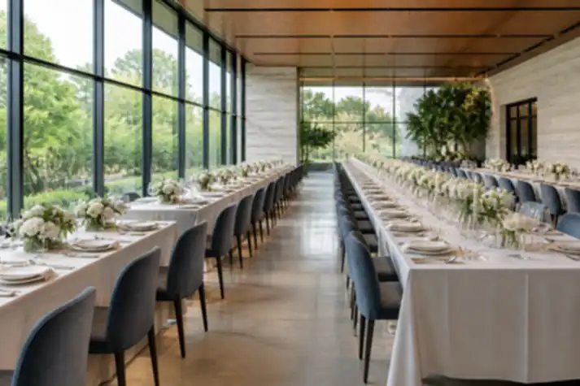
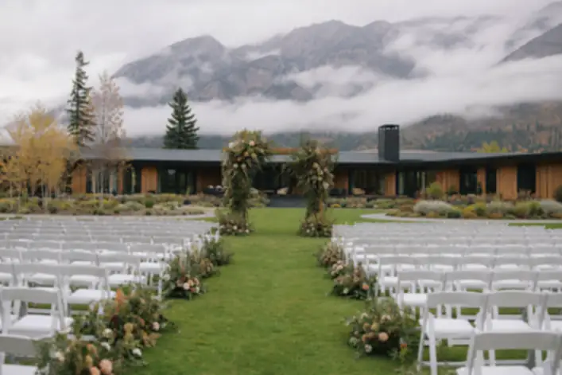
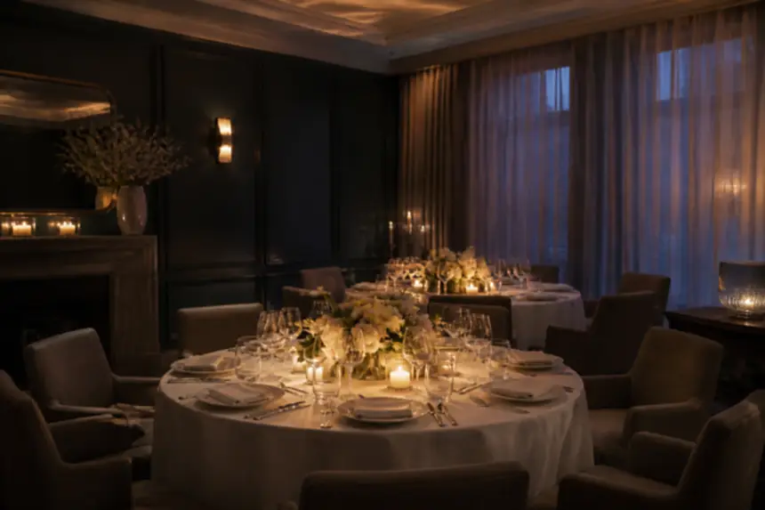
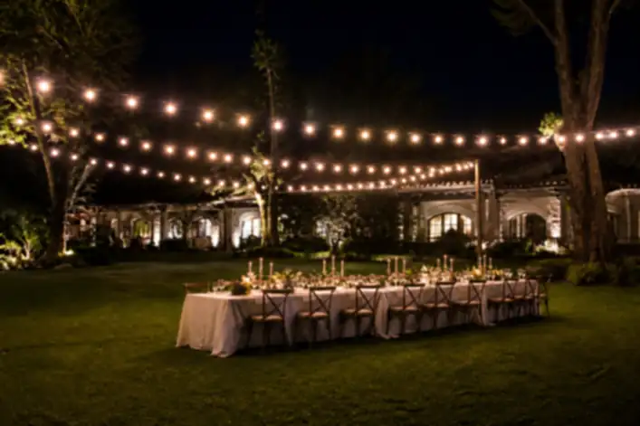
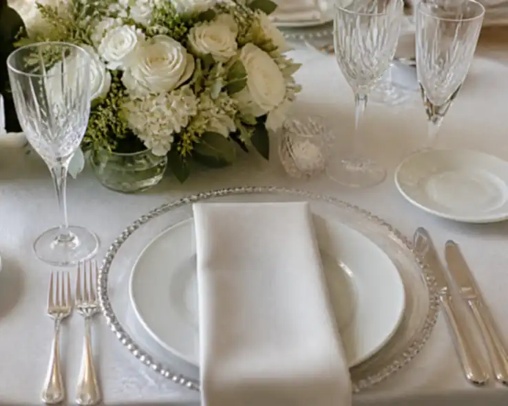
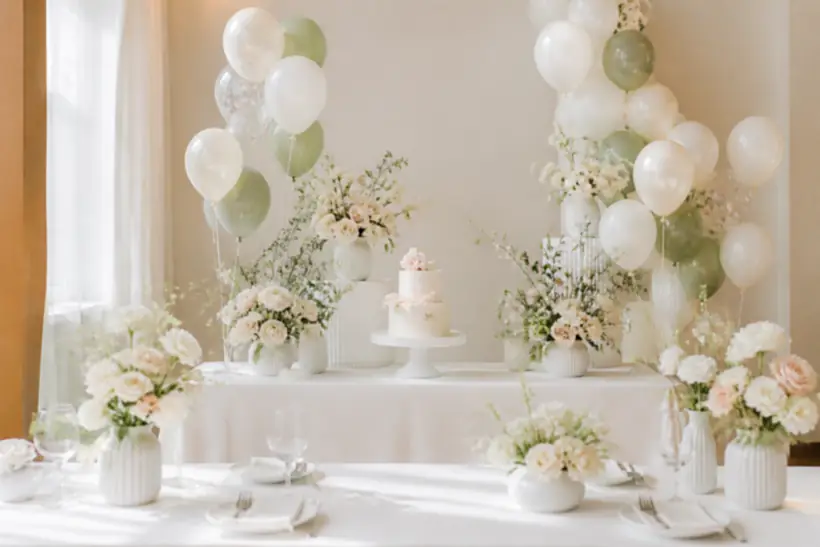

본관
유리벽으로 둘러싸인 메인 홀. 낮에는 자연광, 저녁에는 조명으로. 긴 테이블과 라운드 세팅 모두 가능합니다.
Namyeon · Yangju · 3,000 pyeong
양주 남면의 3,000평. 넓은 잔디와 본관·별관, 하늘정원을 한 팀만을 위해 엽니다. 단독웨딩부터 돌·회갑·기업행사까지, 예약제로 운영합니다.

Since the cafe
닛다는 2025년 5월 카페 영업을 마치고 공간대관으로 전환했습니다. 스몰웨딩·돌잔치·회갑·기업행사·세미나·촬영·스튜디오·소규모 모임까지, 공간대관으로만 운영합니다.
2025.05.26 인스타그램 공지 기준
행사에 맞춰 골라 쓰는 세 개의 공간과 넓은 잔디.

유리벽으로 둘러싸인 메인 홀. 낮에는 자연광, 저녁에는 조명으로. 긴 테이블과 라운드 세팅 모두 가능합니다.

단체와 소규모 모임을 위한 별도 공간. 본관과 분리해 조용히 쓸 수 있습니다.
야외 정원과 테라스. 스몰웨딩 예식과 촬영, 저녁 모임에 어울립니다.

Lawn
넓게 트인 잔디에서 야외 예식을 올리고, 해 질 무렵의 조명 아래 만찬을 이어갑니다.
공간 전체를 한 팀이 사용합니다.
하루 한 팀. 본관과 잔디, 하늘정원을 예식과 피로연에 함께 씁니다.
가족 단위 잔치. 상차림과 좌석 구성을 상담해 드립니다.
워크숍, 단체 모임, 세미나. 스크린과 좌석 세팅을 협의합니다.
광고·화보 촬영, 공간 대여. 촬영 가능 시간을 상담해 드립니다.
각종 소모임과 파티. 별관으로 조용히 진행할 수 있습니다.
행사 형태에 따라 사용 공간과 요금이 달라집니다. 날짜와 인원을 알려 주시면 가능 여부를 확인해 드립니다.
공간과 세팅의 분위기.


안내 인스타 피드 소재를 참고해 제작한 예시 이미지이며 실제 제작 시 매장 사진으로 교체됩니다.
10:30 – 19:00 · 예약제
카페 영업은 종료되었습니다
지도 앱에 따라 감악산로 640으로 표기될 수 있습니다.
031-865-4634
방문 상담은 전화 예약 후 가능합니다.